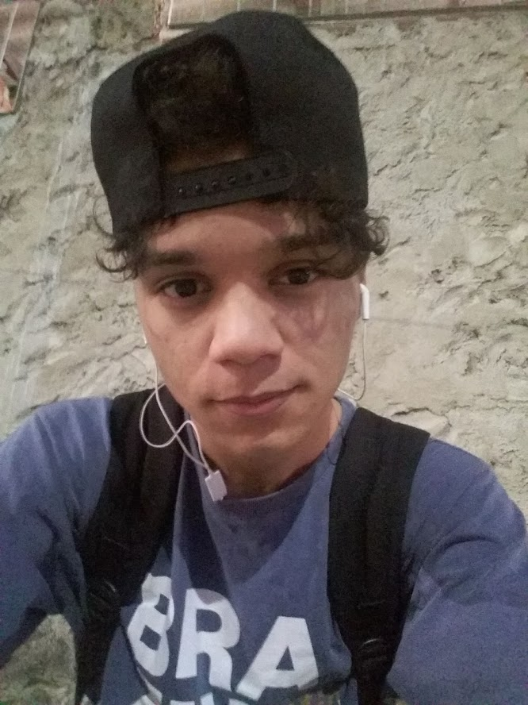

Curriculo do Luiz |
Dados Pessoais

|
ObjetivoEm busca da profissionalização na área de TI, priorizando assim a experiência para meus estudos em busca da melhoria da minha vocação dentro das empresas. |
FormaçãoTécnico em Logística (EEEFM Benício Gonçalves, Vila Velha – 12/2018) Aprendizagem Básica em Processos Construtivos (Instituição Senai Araçás, Vila Velha – 12/2018) Curso extensivo de Informática (Instituição Pozato, Vila Velha – 12/2016) Curso extensivo de Web Design (Instituição Pozato, Vila Velha – 12/2017) |
ExperiênciaMenor Aprendiz na Espaço - Janeiro a dezembro/2018 Encarregado de cumprir todas as funções dentro da área de processos construtivos. Estagiário de TI na Prefeitura de Vila Velha Encarregado de fazer atendimentos de funcionários públicos e ajuda-los a corrigir problemas relacionados a computadores e redes. |
FormaçãoTécnico em Logística (EEEFM Benício Gonçalves, Vila Velha – 12/2018) Aprendizagem Básica em Processos Construtivos (Instituição Senai Araçás, Vila Velha – 12/2018) Curso extensivo de Informática (Instituição Pozato, Vila Velha – 12/2016) Curso extensivo de Web Design (Instituição Pozato, Vila Velha – 12/2017) |
Outras AtividadesUniversidade Vila Velha - Cursando sistemas de informação (ensino superior); Curso extensivo de programação (incompleto); Curso de inglês (incompleto); Prefeitura de Vila Velha - Estagiando em setor de TI Curso extensivo de redes (incompleto) |